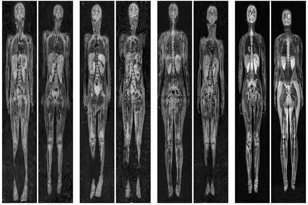

Generative Models for Pediatric wbMRI

Early detection of cancer is key to a good prognosis and requires frequent testing, especially in pediatrics. Whole-body magnetic resonance imaging (wbMRI) is an essential part of several well-established screening protocols, with screening starting in early childhood. To date, machine learning (ML) has been used on wbMRI images to stage adult cancer patients. It is not possible to use such tools in pediatrics due to the changing bone signal throughout growth, the difficulty of obtaining these images in young children due to movement and limited compliance, and the rarity of positive cases. We evaluate the quality of wbMRI images generated using generative adversarial networks (GANs) trained on wbMRI data from The Hospital for Sick Children in Toronto. We use the Frchet Inception Distance (FID) metric, Domain Frchet Distance (DFD), and blind tests with a radiology fellow for evaluation. We demonstrate that StyleGAN2 provides the best performance in generating wbMRI images with respect to all three metrics.